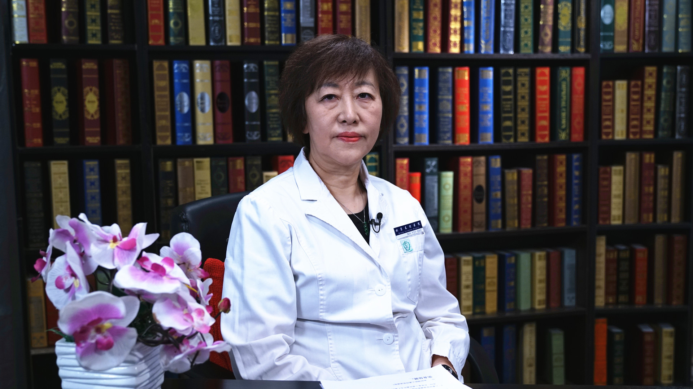

2.26 儿童呼吸道感染¶
崔红 主任医师¶

首都医科大学附属北京友谊医院儿科主任 主任医师 博士生导师；
中国医师协会儿童健康专业委员会副主任委员；中国中西医结合学会儿科专业委员会主任委员；北京医学会儿科学分会副主任委员；北京医师协会儿科医师分会副理事长；《中华儿科杂志》编委；《中华新生儿科杂志》编委。
主要成就： 儿科临床工作34年，救治了大量疑难危重患儿。在国家级多项基金资助下，率领团队开展了大量基础和临床结合的科学研究，使团队科研和临床疾病救治能力大幅提高；主编、主译、审译和参编了多部儿科专著和教科书，发表论文70余篇，其中SCI论文18篇，获发明专利4项。
专业特长： 擅长于儿内科常见病的治疗，新生儿专业，尤其是早产儿脑损伤和危重新生儿的救治。在高危儿的管理、生长发育、儿童保健等相关领域有深入的研究。
常说的儿童“呼吸道感染”到底是怎么回事儿？¶
（采访）您给我们简单的介绍一下什么是儿童呼吸道感染吗？
呼吸道感染是儿童时期非常常见的一种疾病，一般来说我们把它分成上呼吸道感染和下呼吸道感染。
那么上呼吸道感染一般是指气管以上的，比如说鼻、咽、喉的感染，那么下呼吸道当然就是气管以下的，也包括我们最常见的，家长所担心的肺炎，这个就是我们常见的一些呼吸道感染。
那么不同部位的呼吸道感染，表现肯定是不一样的。
比如说最常见的上呼吸道感染，可以是鼻部症状为主，比如说我们家长朋友最常感觉到的，打喷嚏、流鼻涕等等这些，可以伴有发烧，那么也可以是以咽部症状为主要的一种上呼吸道感染，比如说扁桃体发炎，或者就是一个咽部的感染，咽充血，红肿等等，当然喉炎也是上呼吸道感染的一种。
那么下呼吸道感染可以是气管的，可以是支气管的，也可以是肺部的感染，主要的表现肯定就是咳嗽为主，咳嗽可能是一个非常突出的表现，有一些孩子还可以伴有或者是不伴有喘息，严重的时候还可以发烧。
（采访）像除了说打喷嚏，流鼻涕这些症状，上呼吸道感染，还有下呼吸道感染，还有哪些症状表现？
其实上呼吸道感染和下呼吸道感染，作为我们家长朋友，最容易区分的就是他有没有下呼吸道感染的一些咳嗽、喘息，一些呼吸道的症状，呼吸道更加明显的症状，如果没有这种症状，那么多数还是上呼吸道感染，比如说咽部的感染，他可能不一定有很明显的流鼻涕、打喷嚏的症状，那他也属于上呼吸道感染。
（采访）一般来说是上呼吸道感染比较严重？还是下呼吸道感染比较严重？
要是总体来说，似乎还是下呼吸道感染更加严重一些，往往是上呼吸道感染进一步发展，可以导致下呼吸道感染，当然还有一些全身感染引起的下呼吸道感染。
但是对于个体来说，也有非常非常严重的上呼吸道感染，甚至造成生命危险，也有比较轻型的下呼吸道感染，比如说只是一个简单的气管炎，只是有咳嗽，不伴有发烧。
所以不能单纯的去说，上呼吸道感染就很轻，下呼吸道感染就很重，其实都应该引起家长朋友的重视。
诊断儿童呼吸道感染需要做哪些检查？¶
（采访）确诊是不是儿童呼吸道感染，我们去到医院需要做哪些检查？
那么最简单的方法就是查一个血常规，根据白细胞的计数，白细胞的分类，来简单的区分它是病毒的可能性大，还是细菌的可能性大。
那么当然现在也有很多微量取血法，可以做C反应蛋白，那么也可以一定程度上去区分病原是病毒的可能性大，还是细菌的可能性大。
只有在非常严重的时候，我们可以做进一步的检查，比如说鼻咽分泌物的病原体的检测，甚至说取血，查病原或者是病原的抗体，来更明确我到底是哪种病毒，比如说我到底是流感病毒，我还是一些其他的病毒，比如说腺病毒，甚至有特殊的一些EB病毒等等，那么这个对我们的治疗是非常有帮助的。
（采访）一般情况下，我们去到医院查一个血常规，就能知道说是细菌感染，还是病毒感染。
一定程度上可以有助于我们去区分，因为我们都知道，如果是细菌感染的话，白细胞会有一个明显的增高，中性分类的比例也会在他的年龄段的基础上，有一个明显的增高，这样可以一定程度上去帮助我们区分到底是细菌的可能性大，还是病毒的可能性大。
（采访）细菌和病毒引起的症状是不是一样的？
有的时候很难通过症状去区分，比如说如果是扁桃体化脓了，我们当然可以在查体的时候，看到肿大的扁桃体上头，会有脓样的分泌物，但是有些感染的话，单凭临床的表现，有时候确实是很难区分，所以说我们在经验治疗的基础上，也需要一些辅助的实验室的检查，来帮助我们去区分。
儿童呼吸道感染可能引起并发症吗？¶
（采访）那儿童呼吸道感染会不会引起其他的并发症？
可以的，确实是小病也要关注，因为感冒在一些孩子当中是可以有一些并发症的，比如说最常见的并发症就是对心脏的一些损害，轻度的可能只是一个心肌损害，严重的话可以引起来病毒性的心肌炎，甚至爆发性的心肌炎，确实是需要我们家长朋友来关注。
（采访）就是一次小的发烧也可能会引起心脏的一些问题吗？
确实是有可能，虽然这种发生的比例并不是很高，但是确实也需要我们家长朋友的关注，及时的治疗，及时的去发现是否有这种并发症的发生，包括心肌炎的并发症发生的可能，或者是不是有发生的倾向，甚至都有一些表现，还是需要我们家长朋友，一方面是护理、治疗，同时的话也要积极的去密切观察他的病情的变化，这些都是非常重要的。
（采访）引起的这些并发症会不会有一些症状？
可以的，有的时候是不典型的，我们都知道孩子生病的过程当中，最引起我们需要注意的，或者也是我们担忧的，就是往往他的表现是不典型的，和大人的一些疾病是有很大的不同的。
那么在一些并发症，尤其是感冒之后引起心脏的并发症这一点上，其实也是有的时候是很隐蔽的，不容易发现的，但是我们要提醒家长，当发现孩子有一些异常的时候，要及时去医院就诊。
比如说我们刚才谈到的心脏的一些并发症，孩子可以有一些浅显的表现，比如说可以表现精神弱，反应也特别的差，显得特别的倦怠，平常都是活蹦乱跳的，但是这个时候显得特别弱，不愿意动，有的家长朋友会说我的孩子特别赖床，这些的话可能是提醒我们关注的一些征兆。
那么更加严重的时候，可能就会有心律不齐以及心衰的一些表现，比如说可以有缺氧，呼吸困难，当然还有一些循环衰竭的症状，那就非常严重了。
希望家长朋友在孩子发生严重的症状之前，能够及时的发现孩子的异常，及时的就诊，及时的发现问题。
治疗儿童呼吸道感染时，家长要注意什么？¶
（采访）我们对于儿童呼吸道感染是如何治疗的？
儿童呼吸道感染，从经验来说，90%以上的上呼吸道感染是由病毒引起来的，所以这个时候我们的治疗一定要注意，不要轻易的去选择抗生素，那么可以选择一种适合于我们孩子的，味道比较好的一些中药或者是西药的，治感冒的药物就可以了。
（采访）对于下呼吸道呢？
下呼吸道的话，我更建议的是家长一定要在医生指导下进行治疗，因为下呼吸道感染的话，比如说我是气管感染？支气管感染？还是甚至有肺炎了？我的病原到底是哪一种？一般来说它都是上呼吸道感染之后一段时间引起的下呼吸道感染，相对来说病程时间长，病情相对重，还是希望在医生指导下用药，家长朋友不要自己没有根据的去选择药物，可能会耽误病情，治疗效果也不会好。
去医院前，儿童呼吸道感染家长该如何用药？¶
（采访）孩子如果说出现这些感冒、发烧、流鼻涕这种症状，在就医前，家长该如何选择用药？
对于一个上呼吸道感染来说，确实是家长朋友可以先吃一些治感冒的中药，一般来说，现在治感冒的中药种类还是比较多的，选1-2种，我们自己觉得合适于孩子吃的都可以。
但是我们也往往在临床中，看到一些家长朋友因为担心孩子的病情，也是着急，所以在不到24小时，甚至12小时之内，同时吃了很多种类的感冒药，比如说选择一种感冒药之后，觉得症状没有明显的缓解，烧也没有退，还是症状比较严重，马上又吃另一种，没见好之后，接着马上又选另一种，我们在临床中也可以看到，在短短的不到12小时之内，可以吃过5种的感冒药。
那么这个肯定是不对的，一方面对孩子的病情是没有明显的缓解，另一方面可能还有很多药物的副作用。我们都知道很多治感冒的药都是清热的药，要同时吃太多种类清热的药，可能会对孩子产生一定的伤害，药物的副作用也会显得比较明显。
（采访）是不是孩子一出现像这种稍微的低烧、流鼻涕，家长就立即给他用药呢？
这个的话，可以根据孩子的情况而定，因为我们都知道，短期的治感冒的中药，相对来说还是安全的，所以如果说我要是选一种合适的中药，吃1-2次，如果能够一定程度上减缓症状，或者使病情能够更快的好转，缩短病程，应该说还是有益的。
（采访）就是还是建议的。
对，还是建议的。
家长该如何护理呼吸道感染的患儿？¶
（采访）对于儿童呼吸道感染，我们家长该如何护理患儿？
其实护理是非常非常重要的，在上呼吸道感染当中，90%以上都是病毒感染，我们又知道，病毒感染往往是有自限性的，所以虽然我们说在感冒初期的时候，可以用一些中药帮助病情的恢复，减缓病情的症状，但是实际上感冒还是有自限性的，大部分的孩子还是可以很快的好转的，所以这个时候护理就显得格外格外的重要，尤其是在病毒感染的时候。
那么我们往往说，其实对于上呼吸道感染来说，护理可能占的比重，要比药物治疗的比重更加的重要。那么护理当中，首先来说让孩子好好的休息是非常非常重要的，我们也知道孩子往往都容易比较活泼，即使生病了，如果症状不是特别严重的时候，也还会淘气、玩耍，那么这个时候，要多帮助孩子来更好的去休息，保证充足的睡眠，保证很好的休息，这个是非常非常重要的。
那么接下来就是饮食，饮食也是非常重要的，首先来说要多水，家长自己也知道，往往大夫在看病之后，大夫也会说一定回去要多喝水，所以这个是非常重要的，但是喝水也是有技巧的，我们都知道应该多喝水。
但是一定要注意不要一次喝太多，因为感冒它一定是一种全身的症状，全身的一种影响，那么对胃肠道也是有很大的影响的，所以这个时候可能就不能像平常一样。
那么平常可能像一些一两岁的孩子，喝100ml，150ml，200ml都没有问题，但是在生病的时候就不要这样，如果这样的话，在他胃肠本身不健康的状态下，就可以加重他呕吐等等这些消化道的症状，所以这个时候我们一定要多饮，但是全天的液体的总量，饮水的总量要增加，尽量的喝白开水，不要喝那些甜饮料，那么这个对孩子肯定是不利的。
另外一个就是进食，进食的话同样也非常重要，这个时候多数的孩子会食欲不好，即便是食欲好，我们也要小心，这个时候也一定要尽量的吃好消化的，软一点的食物，这样的话，可能更利于孩子的胃肠道的吸收。
如果孩子特别不想吃的时候，一定也不要强迫进食，强迫进食可能反而会加重他的消化道的症状，比如说呕吐，甚至还可以造成腹泻等等，所以这个时候饮食的注意也是非常重要的。
但是也不用采取饥饿疗法，就是我一感冒了，就什么都不能吃了，这个也是不对的。那么提醒家长，尤其是对一些反复呼吸道感染的孩子，一定不要什么都不敢吃，我们往往在说都吃好消化的，吃清淡的，但是一个月，甚至更长的时间，都不吃一些有营养的，含有蛋白质的一些东西，那么孩子的营养状态，生长发育，甚至说抵抗力，反而会受到影响，其实也是不利的，科学的饮食是非常重要的。
（采访）对于上呼吸道感染的孩子来说，家长的一些护理其实比药物治疗更为重要。
对的，非常对，其实护理，包括饮食的护理，睡眠的护理，也包括休息的护理等等，这些真的是比吃药还要重要。
儿童发烧后，可以通过“捂汗”降温吗？¶
（采访）当孩子出现发烧头疼，不舒服的这种现象的时候，家长可能很多就会说多盖一些被子，出点汗可能就好了，这种做法是不是有科学的依据？
其实是不对的，尤其是对一些小年龄段的小婴儿来说，如果这种情况，反而可能会加重疾病，甚至说引起高热惊厥，因为什么？
我们都知道发烧的时候，身体的温度是非常高的，他需要体表来散热，这个时候并不是能够通过捂被，通过保温就能够使他的体温下降，能够让他出汗，其实是不大可能的，是因为机体生病的一个状态而导致的发烧，所以这个时候一定要正常的，按照常规的温度去穿衣，比如说这个温度，适合于穿什么样衣服就穿什么样的衣服，一定不要过冷或者是过热，那么这个也是非常重要的。
因为如果说你过度的去捂盖他，比如说捂着大被子，不但不见得能出汗和退烧，反而使他机体不能够散热，就是体温更不容易降低，而导致高热惊厥这些情况的发生，那么可能会非常的危险，所以这种方法一定是不可取的。
儿童发烧后，可以通过酒精擦拭来物理降温吗？¶
（采访）有的家长可能认为说不想给孩子吃药，我采用这个物理降温的方法吧，比如说在全身擦拭一点酒精，这种我们推荐吗？
物理降温也要看情况，一般来说，物理降温是药物降温的一个非常重要的辅助的办法，在大多数情况下，我们还是鼓励的，比如说脑门上贴一个一凉贴等等这些，我们还是鼓励的，因为物理降温，总的来说还是相对安全的。
但是酒精擦浴，实际上现在是我们已经摒弃的一个方法，一方面孩子会感觉很不舒服，另一方面的话过度的带走热量，也是对孩子的健康有不利的影响的。
那么如果需要物理降温的时候，除了用一凉贴这种可以使得他的体表的温度有一个降低的辅助方法以外，还可以用一些温水擦浴，洗洗温水澡，这些的话可能都是我们提倡的，可能是会对孩子有帮助的。
但是同时我们还要看孩子的个体情况，孩子当时的一个状态，如果孩子已经病情非常严重，而且的话状态也不是很好，生命体征也不是很平稳，这个时候恐怕洗温水澡这些方法就不应该采取了。
（采访）还是要依这个孩子的病情而决定。
对，个体差异是非常非常重要的。
儿童呼吸道感染出现胃肠道症状，家长该如何护理？¶
（采访）有的孩子呼吸道感染了，他可能出现胃肠道的一些表现，比如说呕吐，这时候家长应该如何做？
那么我们一般来说或者从我们的临床情况来分析，从我们的经验来看，多数的孩子在出现消化道症状的时候，是可以通过护理去减缓他的症状，去避免他的症状，而不一定非得需要，特殊的胃肠道的药物来去治疗。
比如说呕吐，就可以通过饮水缓解，少量多次地去饮水，如果我喝50ml水可能会吐，我们可不可以喝40ml，喝30ml？我在一段时间之内，那么我能够把足够的水量保证，但是每次不要喝多，那么这种的话，可能一定程度上就可以避免。
包括饮食，我们往往爱跟家长说的一句，或者是和家长去探讨的就是，那么出现胃肠道症状了，比如说呕吐，如果我们不吃不喝是不是不会导致孩子呕吐？如果是这种情况的话，我们一定可以通过这种加强护理，来使得他的这种胃肠道的反应，胃肠道的症状减轻，甚至不发生。
但是确实也有一部分病情比较严重，如果我们不吃不喝还吐，那么这个时候可能就要靠去医院，甚至要打点滴，来阻断他这种呕吐的不良症状的发生，使得他的病情能够有一个很快的好转。
但是就像我们刚才谈到的，护理是非常非常重要的，不论是从饮水的护理，还是饮食的护理，都要少量多次，那么这个可能很大程度上，可以避免他这种胃肠道症状的发生，减缓他胃肠道症状。
（采访）孩子一出现这种不适症状的时候，他可能就是表现说不想吃饭，家长可能就会做一些，比较清淡的小米粥这种给孩子吃，是不是在这个阶段，孩子就不能吃一点带油腻的东西？
在初期的时候，尤其是在高热比较严重的时候，还是希望清淡饮食为好，油腻的食物的话，对孩子来说，无论是他的消化功能，还是消化道的症状，可能都是不利的。
如何预防儿童呼吸道感染？为什么不建议吃药预防？¶
（采访）有没有办法说预防儿童发生呼吸道感染呢？
其实还是有很多的方法的，我们常常会和家长探讨，尤其是对一个反复呼吸道感染的孩子来说，除了可能他有一些先天性的因素，比如说一些早产的孩子，在早期可能比较弱，或者有一些先天的其他的并发症，比如说有先天性心脏病等等，这类孩子可能确实是很难避免。
对于大多数健康的孩子来说，其实我们靠护理，靠良好的生活习惯的培养，其实都是可以很大程度上，来增加他的抵抗力，来预防他的呼吸道感染的发生，其实是可以的。
我们往往也说，对一个反复呼吸道感染的正常孩子来说，那么往往有一些，我们在喂养教养过程当中的一些弊病，而导致了他容易发生呼吸道感染，所以我们要想预防他的呼吸道感染，也希望家长朋友不要寄托在药上。有时候好多家长都会问我们，吃点什么药，抵抗力就好了？吃点什么药，就可以不经常的生病了？
其实我们更多的还是希望家长朋友，从护理，从教养的方式来解决，其实不外乎从吃、穿、住、行，孩子还有一个玩的方面注意，那么如果吃好、喝好、玩好，使得他在一个健康的状态下去生活，那么肯定他呼吸道感染，也包括上呼吸道感染的发生率就会降低。
（采访）对于一个正常的孩子，如果反复出现呼吸道感染这种情况的话，家长要考虑说日常生活中是不是有一些生活习惯，像您提到的衣、食、住、行，有没有家长做的不对的地方或不恰当的地方，而导致这种情况产生？
确实是这样的。
（采访）其实尤其是对于第一次当父母，都比较害怕孩子生病，所以他们会采用说预防性的用药，这种我们建议吗？
预防性地用药应该说不主张，从大的方面来说不主张，你要预防用什么样的药？什么情况下会预防用药？我们更多的给到家长的建议，还是希望能够从吃、穿、住、行，去让孩子有一个科学的良好的习惯，和生长发育的这样一个过程，不希望有太多的额外的一些，比如说预防性用药等等这些，或者说笼统的总结一句话，我个人不太建议预防性的用药。
对于儿童呼吸道感染，家长在“雾化吸入”“抗生素”的使用上有哪些误区？¶
（采访）对于儿童出现下呼吸道感染，家长可能出现的一些常见误区和错误做法有哪些？
这个确实临床中会看到这样的情况，尤其是对不是第一次发生下呼吸道感染，是一些重症的下呼吸道感染的时候，那么家长往往觉得自己有一定的经验了就擅自用药。
我们常常看到的最大的一个问题，也是目前现在我们在临床中比较担心的一个问题就是关于雾化吸入的问题，其实我们都知道雾化吸入是一个非常好的方法，尤其是对一些喘息性的孩子，可以说是对缓解症状，预防复发，有一个非常好的作用。
但是家长朋友一定要知道，雾化吸入绝对不是一个止咳药，我们也常常看到，家长朋友在孩子头一次生病的时候用了雾化吸入，效果不错，觉得确实是咳嗽，喘息的症状，很快的，甚至瞬间的雾化吸入之后就有好转了，所以等到下一次再发生，其实不是同样的情况，可能也会去选择，那么这种其实是非常不好的。
我们都知道雾化吸入，首先雾化进去的东西是布地奈德激素类的东西，所以当需要的时候没有问题，其实它的副作用，也不是像我们所担心的那么的严重，但是从另一个角度来说，毕竟它是一些激素，甚至是β受体的兴奋剂的一些药物，其实对人身体还是有一定的副作用的，而且不需要的时候，可能副作用会更大。
所以说的话，一定在做雾化吸入的时候，要在医生指导之下去进行，不要把它当成一种止咳药，我们在临床中往往可以看到这个药非常好，用完了以后确实是不咳嗽了，而且的话，我们家孩子特别特别的难喂药，这个就不用喂药了，这一定是不可取的一个方式，再一次的提醒家长朋友，那么当有严重的下呼吸道感染的时候，在选择一些特殊用药，比如说像雾化吸入等等这些药物的时候，一定要在医生指导下进行。
另外一个我们常常看到的在一些重症的感染，或者是发烧的时间比较长一点了，甚至我们说的下呼吸道感染的时候，往往家长会说，我孩子都发烧39度多了，我一定要用点抗生素，甚至自行选择用抗生素。
我们有时候往往也看到，在一次看病的时候，家长会说给我开点抗生素，我们说你这次不需要抗生素，我备一点抗生素，我往往会跟家长朋友说一定不要备抗生素，抗生素的选择一定要在医生指导下，因为每一次生病和每一次生病可能是不一样的，虽然有的时候症状上看似是相同的，但是实际上是不一样的。
比如说上呼吸道感染90%以上都是病毒感染，所以你这个时候就不需要抗生素，即便是我烧到39度以上了，恐怕也不应该用抗生素，那么用抗生素可能是发烧时间比较长了，真的是细菌感染的时候，我们可能才会需要，可能是不是需要做一些辅助的检查，比如说至少查一个血常规，看看是不是有细菌感染的可能，再选择抗生素，所以家长朋友一定不要自行去选择。
另外一个在抗生素的选择当中，我们也往往听到家长朋友说，比如说阿奇类的抗生素，是不是比头孢类的抗生素作用更强？所以我发烧更高的时候，是不是就应该选择阿奇类？
其实肯定不是这样的，不同的抗生素是针对不同种类的病原体，比如说支原体类的感染，可能更多的就是选择大环内酯类的抗生素，如果是一些细菌类的，比如说球菌类的等等，我们可能又要选择什么样的抗生素，其实这些的话，都应该是有一些辅助检查来支持，在医生的指导下去进行，一定不要擅自去选择，并不是病情严重了，我就要用抗生素，那要看是由于什么情况，导致病情的加重和不容易好转，那么还是希望在医生指导下进行。
（采访）首先家长常见的误区，一般就是有两个，一个是雾化吸入，还有一个就是抗生素。虽然说雾化吸入也是安全性很高的一个药物，但是也不是什么时候都适合去使用它的。
对，一定是有特殊的指征，一定是要在医生指导下进行。
（采访）这个抗生素也是一样的，而且抗生素的种类也是很多的，可能说您这次发烧是因为这个细菌引起的，下次可能是因为别的细菌引起的，所以抗生素，我们一定也不要滥用。
对，抗生素的选择也要根据病情以及到底是什么样的病原去决定。
儿童呼吸道感染出现呕吐、腹泻时，可以用口服补液盐吗？¶
（采访）我们会发现有的孩子出现呼吸道感染的时候，可能还伴有呕吐、腹泻，这时候家长可能会采用一些口服补液盐，这种做法我们推荐吗？
要看具体情况，对一般来说，有一些胃肠道的症状，而且不是很严重，比如说只是食欲的下降，不愿意吃饭，也有一些比如说上呼吸道感染，他由于咽部的发炎、嗓子疼，所以他不怎么敢饮水，尤其是孩子他也不懂我多喝水就会病情好，所以这个时候可能饮水量等等会少，可能会有机体的一些缺水的情况，但这个时候不一定需要补液盐。
我们都知道补液盐和一般的白开水的差别，主要是里面有一些电解质的成分，能量的成分，但是对于这一部分孩子，因为他没有一个额外的电解质的丢失，比如说脱水也不是很严重，没有明显的腹泻，那么这个时候可能一般的白开水，还有米汤，可能就是一个很好的选择。
因为我们都知道有一些补液盐的味道上也并不是很好，孩子不见得愿意喝，而且也没有必要，他没有电解质的缺乏的时候，给予过多的电解质的这种负荷或者是含有电解质的这种液体，也不一定对孩子有更多的好处。
当然有的时候对一些呕吐比较严重的，甚至说伴有一些腹泻的孩子，我们也会这样的教家长，比如说白开水、补液盐、米汤等等这些不同的液体给他分开了，比如说我这次喝个二三十毫升的白开水，下一次喝二三十毫升的米汤，再过一段时间喝几口的补液盐，也是可以的。
但是对于呼吸道感染的症状，虽然有些严重，但是消化道的症状并不是那么严重的时候，补液盐是没有必要的。
儿童呼吸道感染症状长期不改善是怎么回事？¶
（采访）有的孩子出现流鼻涕、打喷嚏、鼻塞、鼻痒这种情况，长时间吃药他症状都得不到改善是怎么回事？
这个确实是一个困扰家长的问题，首先我们要知道，对于一个上呼吸道感染来说，比如说他有明显的流鼻涕、打喷嚏这种上呼吸道感染的症状，一般来说不会太长时间，要不然他就好了，要不然就发展到下呼吸道感染了，所以这种上呼吸道感染的症状，一般很少超过一周，一般三五天就逐渐的缓解了。
如果说超过一周，那么鼻部的症状，比如说打喷嚏、流鼻涕，症状还不缓解，那么这个时候，我们不要单纯地再考虑他就是一个上呼吸道感染，始终在坚持吃上呼吸道感染的一些药物，第一方面是没有效果，第二方面可能还会有一些药物的副作用，所以这个时候我们要有更多地考虑，比如说鼻炎，尤其是过敏性鼻炎，往往也是目前孩子非常常见的一类疾病。
（采访）就是如果说在一周之内，我吃药症状没有得到缓解，可能要考虑一下是不是别的疾病了。
对，确实是这样的。
儿童发烧时，什么时候吃退烧药？什么时候用物理降温？¶
（采访）其实说到流鼻涕、打喷嚏这些症状都比较轻，家长可能不那么担心，但是一提到发热，家长可能就比较着急了，说我要吃什么退烧药？要不要采用物理降温？
发烧真的是我们家长最先关注的问题，而且也确实是对一些孩子有很大威胁的一个症状，对于发烧来说，首先我们要知道什么是低热？什么是中度发热？什么是高度发热？那么什么情况之下，我们应该选择药物？什么情况之下，我们应该选择物理降温？
首先来说不超过38度的温度叫做低热，38度到39度之间叫中度发热，39度以上叫高热。那么一般来说，我们建议家长来服退烧药的体温是38.5度，尤其是对一些小年龄段，比如说3-4岁以下，他神经系统发育还不是那么的成熟，如果高热非常高的时候，尤其是在高热初起的时候，那么容易有高热惊厥的发生，所以我们希望他降温还是要更加积极一些。
另外一部分特殊的人群就是虽然他自己没有高热惊厥的病史，但是孩子的父母都有高热惊厥的病史，这一类孩子也是非常容易发生高热惊厥的，所以对这一类孩子，可能无论是物理降温，还是药物降温，可能都要更加积极一些，所以对一个有高热惊厥史，或者是父母双方都有高热惊厥史的，3-4岁之内的孩子，我们可能退热就更加积极一些，选用退热药。
那么物理降温，我们什么情况下应该使用？首先来说它是一个相对安全的方法，可以作为一个药物降温的辅助，比如我们都知道药物的降温，是要有一定的间隔的，就是我不能吃完退烧药一个小时，再吃另一种退烧药，或者我再重复的吃这种退烧药，那么这种方法肯定是不可取的。
不同的退烧药，可能它的间隔时间是不一样的，但是一定要有间隔时间，不管是间隔四个小时，还是间隔六个小时，我们是不主张我发烧一个小时，退了，两个小时又发烧了，我再次用退烧药，这样肯定是不可取的。
在这个当中，我们就鼓励家长物理降温，这种物理降温可以是脑门上贴个一凉贴，如果高烧真的是非常严重，始终不退的话，我们也可以把一凉贴，贴在一些大血管的部位，比如说颈部大血管的部位，腹沟的大血管部位，护士老师可能更知道这些，可以给家长朋友一个更好的辅导和帮助。
如果孩子一般状态都是很好的，也可以采取洗温水澡的方法，用温水擦身上，一定不要用酒精去擦浴。
（采访）一般情况下38.5度以上，我们是建议服用退烧药的。
对，尤其是对3-4岁以下的孩子。
（采访）38.5度以下的这些孩子，如果说也是持续高烧的话，我们怎么建议？
如果对于体温不超过38.5度，又没有太多不适的表现的时候，我们可以不用退热的处理，就按时的去治疗上呼吸道感染，或者治疗原发病就可以了，不用额外的去考虑他温度的问题。
如果他有症状，比如说身上很燥，孩子也比较烦躁，不是显得很舒服的情况之下，我们也可以贴一些一凉贴，采取这种比较温和的物理降温的方式，都可以减缓孩子的症状，让孩子更加舒适一些，度过他最初的这种病情比较重的时期，所以这个时候护理是非常重要的，体温的护理也是一个非常重要的方面。
（采访）就是38.5度以下的孩子，我们就可以采用一些物理的方法，家长多在护理上下功夫就可以了。
对的。